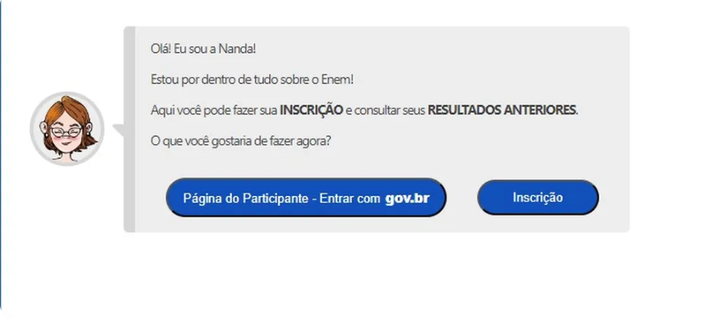

ENEM
Enem 2024: inscrições começam nesta segunda; confira o cronograma completo, valor da taxa e outros detalhes
Todos os candidatos interessados em participar do Enem 2024 devem se inscrever, inclusive quem teve o pedido de isenção de taxa aceito. Provas serão aplicadas em 3 e 10 de novembro
As inscrições para o Exame Nacional do Ensino Médio (Enem) 2024 começaram nesta segunda-feira (27) e vão até 7 de junho.
Tire suas dúvidas abaixo:Em que site fazer a inscrição? É só entrar na página do Participante, em https://enem.inep.gov.br/participante/
Qual é o valor da taxa de inscrição? Ela custa R$ 85 e deverá ser quitada até 12 de junho. Somente após o pagamento, a inscrição estará confirmada(veja passo a passo mais abaixo).
Quais as formas de pagamento?A taxa deve ser paga por boleto, PIX ou cartão de crédito.
Quem está isento da taxa precisa se inscrever no Enem? SIM! Mesmo quem conseguiu a isenção (como os alunos da rede pública) precisa se inscrever. Caso contrário, não poderá fazer a prova.
Para que serve o Enem?Ele é uma das principais portas de entrada para a educação superior no Brasil, utilizado por instituições públicas e privadas como critério de seleção, além de ser um requisito para programas governamentais de auxílio estudantil. Não há como se inscrever no Sisu, no Prouni e no Fies sem ter feito o Enem.
Quando as provas serão aplicadas? Em 3 e 10 de novembro.
Cronograma do Enem 2024
Inscrições: de 27/5 e 7/6/2024
Pagamento da taxa de inscrição: de 27/5 e 12/6/2024
Pedido de tratamento pelo nome social: de 27/5 a 7/6/2024
Solicitação de atendimento especializado: de 27/5 a 7/6/2024
Resultado das solicitações de atendimento especializado: 17/6/2024
Recurso para pedidos negados: de 17/6 a 21/6/2024
Divulgação dos locais de prova: data a ser marcada
Aplicação do Enem: 3 e 10/11/2024
Divulgação do gabarito: 20/11/2024
Divulgação do resultado: 13/1/2025